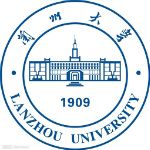

兰州大学

学校介绍
兰州大学
信息学院
最近一周
信息学院
兰州大学
兰州大学
兰州大学是教育部直属的全国重点综合性大学，是国家“985工程”和“211工程”重点建设高校之一。学校创建于1909年，其前身是清末新政期间设立的甘肃法政学堂， 是甘肃近代高等教育开端之标志，开启了西北高等教育的先河。兰州大学学科门类齐全，学科特色鲜明，涵盖了12个学科门类。学校创建于1909年，始为甘肃法政学堂，是中国西北地区第一个具有现代意义的高等学校。1928年，扩建为兰州中山大学。


信息科学与工程学院
为进一步落实《兰州大学支持兰州文理学院转型发展协议》，10月31日，兰州大学-兰州文理学院信息领域一流专业建设交流会暨首期学术沙龙在兰州 文理学院成功召开。此次活动以“新机遇，促合作，共发展”为主题，重点围绕信息领域一流专业建设经验分享和人工智能、信息技术、数字媒体、大数 据等领域进行学术研讨交流。活动由兰州大学信息学院和兰州文理学院数字媒体学院共同承办。
最近一周
为认真贯彻落实习近平总书记视察甘肃重要讲话和指示精神，深入贯彻落实教育部、甘肃省、兰州市共建兰州大学协议，实施人才强校战略，增强兰州市和兰州大学 人才集聚和服务能力，推动学校事业发展和“双一流”建设工作，兰州市、兰州大学联合在北京设立人才工作站。12月8日，兰州市·兰州大学驻京人才工作站揭牌仪式暨招才引智政策宣介会在北京举行。甘肃省委常委、兰州市委书记李荣灿，兰州大学党委书记袁占亭出席活动并 共同为人才工作站揭牌。
信息科学与工程学院
为进一步落实《兰州大学支持兰州文理学院转型发展协议》，10月31日，兰州大学-兰州文理学院信息领域一流专业建设交流会暨首期学术沙龙在兰州 文理学院成功召开。此次活动以“新机遇，促合作，共发展”为主题，重点围绕信息领域一流专业建设经验分享和人工智能、信息技术、数字媒体、大数 据等领域进行学术研讨交流。活动由兰州大学信息学院和兰州文理学院数字媒体学院共同承办。
兰州大学
兰州大学是教育部直属的全国重点综合性大学，是国家“985工程”和“211工程”重点建设高校之一。学校创建于1909年，其前身是清末新政期间设立的甘肃法政学堂， 是甘肃近代高等教育开端之标志，开启了西北高等教育的先河。兰州大学学科门类齐全，学科特色鲜明，涵盖了12个学科门类。学校创建于1909年，始为甘肃法政学堂，是中国西北地区第一个具有现代意义的高等学校。1928年，扩建为兰州中山大学。
兰州大学（Lanzhou
University）是中华人民共和国教育部直属的综合性全国重点大学，
中央直管副部级建制，由国家国防科技工业局与教育部共建，世界一流大学建设高校（A类），
“985工程”和“211工程”重点建设高校。选“珠峰计划”、“强基计划”、“2011计划”、“111计划”、
卓越法律人才教育培养计划、卓越医生教育培养计划等。
Copyright © Hollow Man